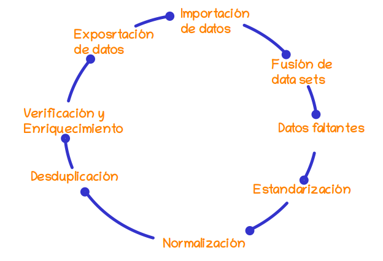

Una de las tareas más importante al realizar un proyecto de Ciencia de Datos corresponde a la preparación de los datos (Limpieza de datos o data cleaning) que posteriormente van a permitir el modelamiento adecuado.
 Figura :
El tratamiento de los datos faltantes es un aspecto muy importante en el
El tratamiento de datos faltantes es un aspecto crítico en ciencia de datos, ya que los datos faltantes pueden afectar la calidad y validez de los análisis y modelos. Aquí te presento algunas estrategias comunes para manejar los datos faltantes:
Eliminacion de variables 1. Eliminación de filas o columnas: Si los datos faltantes son pocos en comparación con el tamaño total del conjunto de datos, una estrategia simple es eliminar las filas o columnas que contienen datos faltantes. Sin embargo, esta estrategia puede llevar a una pérdida de información si los datos faltantes son sistemáticos o si se eliminan muchas observaciones.
Imputación de valores: La imputación implica estimar y reemplazar los valores faltantes con valores razonables. Esto se puede hacer de varias maneras, como reemplazar los valores faltantes por la media, la mediana o el valor más frecuente de la variable correspondiente. Otra opción es utilizar técnicas más avanzadas, como la imputación basada en modelos, donde se construye un modelo predictivo para estimar los valores faltantes.
Tratamiento de datos faltantes como una categoría: En algunos casos, los datos faltantes pueden tener un significado propio y no deben ser imputados ni eliminados. En lugar de eso, puedes considerar tratar los datos faltantes como una categoría adicional en el análisis o modelo.
Técnicas avanzadas de imputación: Existen métodos más sofisticados para imputar datos faltantes, como la imputación múltiple (multiple imputation) y la imputación basada en modelos de aprendizaje automático. Estos enfoques generan múltiples conjuntos de datos imputados y tienen en cuenta la incertidumbre asociada con la imputación.
Es importante evaluar cuidadosamente el patrón y la naturaleza de los datos faltantes antes de decidir qué estrategia utilizar. Además, es fundamental tener en cuenta que cualquier método de imputación introduce cierto grado de incertidumbre y puede afectar los resultados de los análisis o modelos. Por lo tanto, es recomendable documentar y tener en cuenta el proceso de imputación en el análisis y la interpretación de los resultados.
datos <- data.frame(edad = c(25, 30, NA, 35, NA, 40, 45))
cat(“Datos originales:”) print(datos)
media_edad <- mean(datos$edad, na.rm = TRUE)
datos\(edad[is.na(datos\)edad)] <- media_edad
cat(“imputados:”) print(datos) ———————————————–
Para medir la cantidad de datos faltantes en una base de datos, puedes utilizar diversas funciones y métodos en R. Aquí te muestro dos enfoques comunes:
is.na() y sum(): Esta combinación
de funciones te permite contar la cantidad de valores faltantes en cada
columna de tu base de datos. Puedes usar is.na() para
identificar los valores faltantes y sum() para calcular la
suma total de valores verdaderos (TRUE), que corresponden a los datos
faltantes.# Calcular la cantidad de datos faltantes por columna
num_faltantes <- apply(datos, 2, function(x) sum(is.na(x)))
# Imprimir los resultados
cat("Cantidad de datos faltantes por columna:\n")
print(num_faltantes)En este ejemplo, datos representa tu base de datos. La
función apply() se utiliza para aplicar la función anónima
a cada columna de la base de datos. La función anónima
function(x) sum(is.na(x)) cuenta la cantidad de valores
faltantes en cada columna utilizando is.na() y
sum(). El resultado se almacena en
num_faltantes, que muestra la cantidad de datos faltantes
por columna.
naniar: El paquete naniar
proporciona una variedad de funciones útiles para trabajar con datos
faltantes. Una función particularmente útil es vis_miss(),
que crea visualizaciones gráficas de los datos faltantes.library(naniar)
# Visualización gráfica de datos faltantes
vis_miss(datos)Al utilizar vis_miss(), se generará un gráfico de barras
y una matriz de puntos que resumen visualmente los datos faltantes en tu
base de datos. Los valores faltantes se mostrarán en color rojo,
mientras que los valores presentes se mostrarán en color azul.
Estos enfoques te permitirán obtener una medida cuantitativa de la
cantidad de datos faltantes en tu base de datos y visualizarlos de
manera más intuitiva utilizando el paquete naniar. Puedes
elegir el enfoque que mejor se adapte a tus necesidades y
preferencias.
Existen varias técnicas para la imputación de datos, y la elección de la técnica adecuada depende del contexto de tus datos y de la naturaleza de los valores faltantes. A continuación, te presento algunas de las técnicas más comunes utilizadas para la imputación de datos:
Imputación por media o mediana: Esta técnica consiste en reemplazar los valores faltantes con la media o la mediana de la variable correspondiente. Es una técnica simple y ampliamente utilizada, especialmente en variables numéricas. La media se utiliza cuando los datos siguen una distribución normal, mientras que la mediana se prefiere cuando los datos tienen valores atípicos o una distribución sesgada.
Imputación por moda: En esta técnica, se reemplazan los valores faltantes con el valor más frecuente (moda) de la variable. Es útil para variables categóricas y discretas.
Imputación por valores aleatorios: En este enfoque, se generan valores aleatorios dentro del rango de los valores observados existentes y se utilizan para reemplazar los valores faltantes. Esto mantiene la variabilidad de los datos y evita introducir sesgos. Sin embargo, puede resultar en resultados diferentes en cada imputación aleatoria.
Imputación por regresión: Esta técnica utiliza un modelo de regresión para predecir los valores faltantes basándose en otras variables predictoras. Se ajusta un modelo a los datos completos y luego se utilizan las variables predictoras para predecir los valores faltantes. Es especialmente útil cuando hay relaciones lineales o no lineales entre las variables.
Imputación múltiple (multiple imputation): Esta técnica implica generar múltiples conjuntos de datos imputados, donde cada conjunto tiene sus propias imputaciones. Luego, se realizan análisis en cada conjunto de datos imputados y se combinan los resultados para tener en cuenta la incertidumbre introducida por la imputación.
Imputación basada en modelos de aprendizaje automático: Esta técnica utiliza modelos de aprendizaje automático, como regresión lineal, regresión logística o árboles de decisión, para predecir los valores faltantes. Estos modelos pueden capturar relaciones más complejas en los datos y mejorar la precisión de la imputación.
Es importante evaluar cuidadosamente el patrón de los datos faltantes y considerar la naturaleza de tus datos antes de elegir una técnica de imputación. Además, es recomendable realizar una validación cruzada o evaluar la calidad de las imputaciones utilizando métricas adecuadas para asegurarse de que los valores imputados sean razonables y no introduzcan sesgos en los análisis o modelos subsiguientes.
¡Por supuesto! Aquí tienes algunos ejemplos de técnicas de imputación
de datos en R utilizando paquetes populares como mice y
missForest:
mice:library(mice)
# Crear un dataframe de ejemplo con valores faltantes
datos <- data.frame(var1 = c(1, 2, NA, 4, 5),
var2 = c(NA, 10, 20, NA, 50))
# Imputar los valores faltantes por la media
imp <- mice(datos, method = "mean")
datos_imputados <- complete(imp)
# Imprimir los datos imputados
print(datos_imputados)En este ejemplo, utilizamos el paquete mice para
realizar la imputación por la media. La función mice() crea
un objeto de imputación, donde especificamos el método de imputación
como “mean”. Luego, utilizamos complete() para obtener los
datos imputados del objeto de imputación.
missForest:library(missForest)
# Crear un dataframe de ejemplo con valores faltantes
datos <- data.frame(var1 = c(1, 2, NA, 4, 5),
var2 = c(NA, 10, 20, NA, 50))
# Imputar los valores faltantes utilizando missForest
datos_imputados <- missForest(datos)
# Imprimir los datos imputados
print(datos_imputados$ximp)En este ejemplo, utilizamos el paquete missForest para
realizar la imputación de datos. La función missForest()
realiza la imputación utilizando métodos de bosques aleatorios. Los
datos imputados se almacenan en el objeto devuelto por la función, y
podemos acceder a ellos utilizando $ximp.
Estos son solo dos ejemplos de técnicas de imputación utilizando paquetes populares en R. Hay otros paquetes y enfoques disponibles, por lo que te recomiendo explorar más opciones según tus necesidades específicas. Recuerda evaluar y validar los resultados de la imputación antes de utilizar los datos imputados para análisis o modelado.
¡Por supuesto! Aquí tienes algunos ejemplos de técnicas de imputación
de datos en R utilizando paquetes populares como mice y
missForest:
mice:library(mice)
# Crear un dataframe de ejemplo con valores faltantes
datos <- data.frame(var1 = c(1, 2, NA, 4, 5),
var2 = c(NA, 10, 20, NA, 50))
# Imputar los valores faltantes por la media
imp <- mice(datos, method = "mean")
datos_imputados <- complete(imp)
# Imprimir los datos imputados
print(datos_imputados)En este ejemplo, utilizamos el paquete mice para
realizar la imputación por la media. La función mice() crea
un objeto de imputación, donde especificamos el método de imputación
como “mean”. Luego, utilizamos complete() para obtener los
datos imputados del objeto de imputación.
missForest:library(missForest)
# Crear un dataframe de ejemplo con valores faltantes
datos <- data.frame(var1 = c(1, 2, NA, 4, 5),
var2 = c(NA, 10, 20, NA, 50))
# Imputar los valores faltantes utilizando missForest
datos_imputados <- missForest(datos)
# Imprimir los datos imputados
print(datos_imputados$ximp)En este ejemplo, utilizamos el paquete missForest para
realizar la imputación de datos. La función missForest()
realiza la imputación utilizando métodos de bosques aleatorios. Los
datos imputados se almacenan en el objeto devuelto por la función, y
podemos acceder a ellos utilizando $ximp.
Estos son solo dos ejemplos de técnicas de imputación utilizando paquetes populares en R. Hay otros paquetes y enfoques disponibles, por lo que te recomiendo explorar más opciones según tus necesidades específicas. Recuerda evaluar y validar los resultados de la imputación antes de utilizar los datos imputados para análisis o modelado.
¡Claro! A continuación, te mostraré ejemplos de cómo realizar la imputación de datos utilizando diferentes técnicas en R.
# Imputación por media
datos$edad[is.na(datos$edad)] <- mean(datos$edad, na.rm = TRUE)
# Imputación por mediana
datos$edad[is.na(datos$edad)] <- median(datos$edad, na.rm = TRUE)En estos ejemplos, se imputan los valores faltantes en la variable
“edad” del dataframe “datos” utilizando la media (mean()) o
la mediana (median()) de la variable correspondiente. Los
valores faltantes se reemplazan directamente con el valor imputado
utilizando la función de indexación
[is.na(datos$edad)].
# Cargar el paquete "dplyr" para usar la función "mode()"
library(dplyr)
# Imputación por moda
datos$categoria[is.na(datos$categoria)] <- mode(datos$categoria, na.rm = TRUE)En este ejemplo, se imputan los valores faltantes en la variable
categórica “categoria” del dataframe “datos” utilizando la moda
(mode()) de la variable. La función mode() se
obtiene del paquete “dplyr”. Los valores faltantes se reemplazan
directamente con el valor imputado utilizando la función de indexación
[is.na(datos$categoria)].
# Imputación por valores aleatorios
set.seed(123) # Establecer semilla para reproducibilidad
datos$altura[is.na(datos$altura)] <- runif(sum(is.na(datos$altura)), min = min(datos$altura, na.rm = TRUE), max = max(datos$altura, na.rm = TRUE))En este ejemplo, se imputan los valores faltantes en la variable
numérica “altura” del dataframe “datos” utilizando valores aleatorios
generados por runif(). La función runif()
genera valores aleatorios dentro del rango de los valores observados
existentes en la variable “altura”. La función
sum(is.na(datos$altura)) se utiliza para determinar cuántos
valores faltantes hay y asegurarse de generar la cantidad adecuada de
valores aleatorios.
Estos ejemplos ilustran cómo realizar la imputación de datos utilizando diferentes técnicas en R. Recuerda adaptar las técnicas a tus propios datos y contexto, y considera la evaluación y validación de las imputaciones realizadas.
çç Sí, hay muchos ejemplos de imputación de datos en Kaggle. Kaggle es una plataforma en línea muy popular para la comunidad de ciencia de datos, donde los profesionales comparten conjuntos de datos y colaboran en proyectos. Puedes encontrar numerosos kernels y notebooks en Kaggle que muestran diferentes técnicas de imputación de datos.
Aquí te muestro un ejemplo de Kaggle donde se realiza la imputación de datos utilizando varias técnicas:
Título: “Data Cleaning and Imputation Techniques”
Enlace: https://www.kaggle.com/jpmiller/data-cleaning-and-imputation-techniques
Este kernel muestra cómo manejar datos faltantes y aplicar diferentes
técnicas de imputación en un conjunto de datos utilizando la biblioteca
pandas en Python. El autor proporciona explicaciones
detalladas y ejemplos prácticos de cómo utilizar la imputación por
media, mediana, moda y valores aleatorios.
Te recomendaría explorar Kaggle y buscar específicamente ejemplos de imputación de datos en los kernels y notebooks disponibles. Puedes encontrar una amplia variedad de técnicas y casos de estudio que te ayudarán a comprender mejor las diferentes estrategias y cómo implementarlas en tu propio análisis de datos.